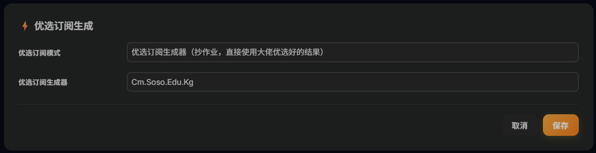

🎁 [晚高峰流畅 4K！拯救你的 Cloudflare 免费节点 | 测速优选与自建 ProxyIP 终极指南]
本期要点： 使用 Clouflare 搭建的节点，在使用默认功能优选节点时，由于使用的人数较多，导致节点能用但延迟较高、不稳定且大量节点无法连接，本期视频从根本原因出发，按优先级逐步优化，帮你把延迟从 1000ms+ 降到 100ms 以内，确保秒开4K视频，且播放速度稳定。
视频主要内容
- 流量链路分析：延迟高的三个原因
- 修复 ProxyIP：消除大量连接失败节点（必做）
- CloudflareSpeedTest 本地测速：找到最优 CF IP（必做）
- 开启 ECH：减少 GFW 干扰，降低延迟抖动（强烈推荐）
- 调整优选端口：不同运营商对比测试（可选）
- 自建 ProxyIP：完全控制出口质量（有 VPS 则推荐）
- SOCKS5 链式代理：效果最强的私人出口方案（有 VPS 则推荐）
先搞清楚：延迟高的根源在哪里
优化前必须理解流量走的完整路径，每一跳都会叠加延迟：
你的设备
↓ 优选IP 决定入口质量
Cloudflare 边缘节点
↓ Worker 运行（10ms CPU 限制）
CF Worker
↓ ProxyIP 决定出口质量
ProxyIP 中转节点
↓
目标网站
操作步骤
第一步：修复 ProxyIP（必做，效果最显著）
背景：CF Worker 被 Cloudflare 限制，无法直接访问 Cloudflare 托管的网站，需要 ProxyIP 做中转。ProxyIP 失效是节点大量失败最主要的原因。
进后台 → 设置 → ProxyIP，填入多个备用地址，用换行分隔，失效时自动切换：
proxyip.cmliussss.net,
cdn-all.xn--b6gac.eu.org,
cdn.xn--b6gac.eu.org,
edgetunnel.anycast.eu.org,
cdn.anycast.eu.org
验证是否有效：https://check.proxyip.cmliussss.net/
预期效果：配置后，连接失败的节点基本消除。
第二步：用本地测速找最优 IP（核心优化）
edgetunnel 默认随机抽取 CF IP，质量完全靠运气。通过本地测速找到对你当前网络延迟最低的 IP，是最直接有效的优化。
下载 CloudflareSpeedTest
Windows
前往 CloudflareSpeedTest Releases 下载 cfst_windows_amd64.zip，解压后得到 cfst.exe，在解压目录打开终端运行。
macOS
mkdir ~/cfst && cd ~/cfst
# Intel Mac
curl -L -o cfst.zip https://ghfast.top/https://github.com/XIU2/CloudflareSpeedTest/releases/download/v2.3.4/cfst_darwin_amd64.zip
# Apple Silicon (M 系列)
# curl -L -o cfst.zip https://ghfast.top/https://github.com/XIU2/CloudflareSpeedTest/releases/download/v2.3.4/cfst_darwin_arm64.zip
unzip cfst.zip
chmod +x cfst
mkdir ~/cfst && cd ~/cfst
wget https://ghfast.top/https://github.com/XIU2/CloudflareSpeedTest/releases/download/v2.2.5/CloudflareST_linux_amd64.tar.gz
tar -zxvf cfst_linux_amd64.tar.gz
chmod +x cfst
关闭代理后测速
必须关闭代理，否则测出的是代理服务器到 CF 的延迟，对本机没有意义。
unset http_proxy https_proxy HTTP_PROXY HTTPS_PROXY ALL_PROXY all_proxy
# 验证已关闭（应输出空）
echo $http_proxy
用 HTTPing 模式测速
| 参数 | 含义 |
|---|---|
-httping |
HTTP 测速模式，必须加，过滤掉“ TCP 通但 HTTP 代理不可用”的假可用 IP |
-tl 150 |
只保留延迟 150ms 以内的 IP |
-sl 5 |
只保留下载速度 5MB/s 以上的 IP |
-p 15 |
输出前 15 个结果 |
为什么要用 HTTPing 而不是默认 TCP 模式？TCP 测速会有大量“看起来可用、实际在客户端 Timeout”的 IP，而 HTTPing 模式与 Clash 客户端测速逻辑一致，结果更准确。
实测参考（每次不同，仅示例）：
IP 地址 延迟(ms) 速度(MB/s) 地区
162.159.45.46 44.10 13.03 NRT (东京)
162.159.44.188 45.34 11.82 NRT (东京)
172.64.53.100 59.02 13.42 NRT (东京)
172.64.52.232 62.29 13.43 NRT (东京)
162.159.38.157 64.46 12.82 NRT (东京)
注意：TCP 测速时 SIN（新加坡）节点可用，但在客户端实测时 Timeout。建议在 Clash 里全部测速后，删掉经常 Timeout 的地区节点。
把测速结果填入后台 后台 → 优选订阅生成 → 模式选「自定义订阅（支持汇聚订阅）」
格式为 IP地址:端口#备注名，每行一个：
162.159.45.46:443#NRT优选1
162.159.44.188:443#NRT优选2
172.64.53.100:443#NRT优选3
172.64.52.232:443#NRT优选4
162.159.38.157:443#NRT优选5
备选方案：使用优选订阅生成器（小白一键抄作业）
如果你觉得本地命令行测速太麻烦，或者自己测出来的 IP 效果都不太理想，可以直接使用网络大佬们搭建的“优选订阅生成器”。
这些接口背后有服务器在 24 小时不间断地筛选 Cloudflare 全网优质 IP。你只需要填入接口，系统就会自动帮你获取当前最高速的节点，完全不用自己动手测速。
操作步骤：
- 进入 edgetunnel 后台设置页面，向下滚动找到 「优选订阅生成」 板块。
- 优选订阅模式：在下拉菜单中选择「优选订阅生成器（抄作业，直接使用大佬优选好的结果）」。
- 优选订阅生成器：在输入框中，填入以下任意一个稳定的大佬优选地址（任选其一即可）：

第四步：开启 ECH（推荐）
原理：ECH（Encrypted Client Hello）是 TLS 1.3 的扩展，对握手阶段的 SNI 字段加密。GFW 无法通过 SNI 识别目标域名，从而减少针对性的 QoS 限速和干扰，降低延迟抖动，提高连接稳定性。
前提：Clash Verge Rev 使用 Meta 内核，已原生支持 ECH，可以直接用。
操作步骤： 进入管理后台，找到 【Encrypted Client Hello】 设置面板，勾选 「启用」 即可，其他所有选项保持默认，点击保存。
保存后重新拉取订阅，节点链接中会自动附加 ECH 参数。
💡 排错提示 如果开启后节点全部不通，先关掉 ECH 验证基础链路是否正常，再重新测试。ECH 应该在基础链路稳定的前提下开启。
第五步：测试不同端口（可选）
默认端口 443，但不同运营商对不同端口的 QoS 策略不同，可以逐一测试：
后台 → 优选订阅生成 → 「指定优选端口」
| 端口 | 说明 |
|---|---|
443 |
默认，最通用 |
2053 |
联通/移动可能更快 |
2083 |
CF 支持的备用 TLS 端口 |
2087 |
CF 支持的备用 TLS 端口 |
8443 |
备用 |
建议每个端口单独跑一次测速，对比延迟后选最低的固定使用。
第六步（有 VPS）：自建 ProxyIP
公共 ProxyIP 被大量用户共享，存在被滥用、限速甚至封锁的风险。如果你有一台 VPS（日本或新加坡节点效果最佳），可以自建 ProxyIP，完全控制出口质量。
Nginx 配置示例：
server {
listen 443 ssl;
server_name proxyip.yourdomain.com;
ssl_certificate /path/to/cert.pem;
ssl_certificate_key /path/to/key.pem;
ssl_protocols TLSv1.2 TLSv1.3;
location / {
proxy_pass https://$host;
proxy_ssl_server_name on;
proxy_set_header Host $host;
proxy_set_header X-Real-IP $remote_addr;
resolver 1.1.1.1 valid=60s;
resolver_timeout 5s;
}
}
链路对比：
公共 ProxyIP：本地 → CF优选IP → Worker → 公共ProxyIP（不可控） → 目标
自建 ProxyIP：本地 → CF优选IP → Worker → 自己VPS（稳定可控） → 目标
第七步（有 VPS）：SOCKS5 链式代理
如果你有 VPS，可以让 Worker 的出口流量直接经过你的 SOCKS5 节点落地，效果最强：
或通过订阅路径动态指定（单节点级别）： 效果：所有流量从 VPS 落地，相当于把 edgetunnel 变成了一个有固定出口的私人节点。常见问题
测速工具测出来很好，但 Clash 里还是 Timeout
- 原因：TCP 测速会过滤不掉“ TCP 可达但 HTTP 代理不可用”的 IP，必须用 HTTPing 模式。
- 解决：测速时加
-httping参数，再把结果填入自定义订阅。
ProxyIP 填了多个，但节点还是失败
- 原因：填入的 ProxyIP 本身已经失效，或格式有误。
- 解决：用验证工具 check.proxyip.cmliussss.net 逐一测试，只保留验证通过的地址。
开了 ECH 之后节点全部不通
- 原因：客户端版本、DNS 配置或链路环境不支持 ECH。
- 解决：先关闭 ECH，确认基础链路正常后，再用保守配置（ECH DNS 填
cloudflare-ech.com，ECH SNI 留空）重新测试。
测速之后多久需要重测
- 原因：CF IP 的路由质量会随时间变化，优选结果不是永久有效的。
- 解决：建议每周重测1-2次，或发现节点明显变慢时重测。
⚠️ 免责声明
- 本文内容仅供技术交流，请遵守当地法律法规。